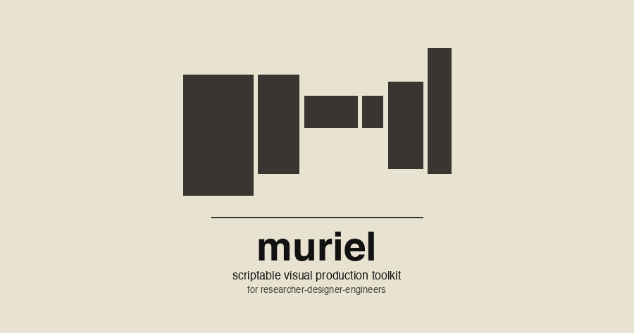
muriel
Interaction design and visual craft.
From a design question to an interface you can explore and an artifact you can reproduce.
Design that you can inspect
Muriel is a design skill for coding agents. It connects perception and interaction research to working interfaces, typography, charts, diagrams, and motion. Guides help choose a representation; demos make its behavior visible; source lets you adapt it to your project.
Named after Muriel Cooper, co-founder of MIT’s Visible Language Workshop. The Visible Language guide traces that design lineage and connects it to contemporary collection and linked-view examples.
Explore, select, inspect

Wunderkammer
Survey a collection, filter and regroup it, then inspect the individual frame. The wall, spatial aisle, and attribute-based arrangements offer different ways to explore the same material. The guide and screenshot cover release 0.3.0; the live demo can change independently.
Try the wall ↗ · Explore the aisle ↗ · Read the guide · View source ↗
Linked Atlas
Follow a selected cohort across an overview, a zoomed plot, a habitat breakdown, and a record table. Synthetic observations keep the focus on interaction: what stays selected, what changes with zoom, and how to recover your place.
Made with HyperFrames
Two films built from working software. Capture the interaction in the app, compose the titles and transitions in HyperFrames, then encode the finished cut. The same spatial material becomes both an explorable collection and a film.
Cats. Lots of cats.
One cat opens into a rushing aisle of images. Filter to ginger coats, arrange by colour and era, then connect an observation to its supporting images. Cat artwork generated with Adobe Firefly; the collection views are captured from Wunderkammer.
Watch on YouTube ↗ · Production notes and scene descriptions · Collection guide · Try Wunderkammer ↗
Psychodeli — a dance partner for your senses.
Recorded Psychodeli visuals become moving tiles in a warehouse, stacks, a wall, and a sphere. The sequence lands on the animated wordmark and platform end card. HyperFrames brings the captured scenes, typography, and soundtrack together.
Production notes and scene descriptions · Video guide · Explore Psychodeli ↗
Featured work
A selection of visual artifacts and the recipes behind them. The examples index brings the live demos and worked artifacts together, with guides and source.
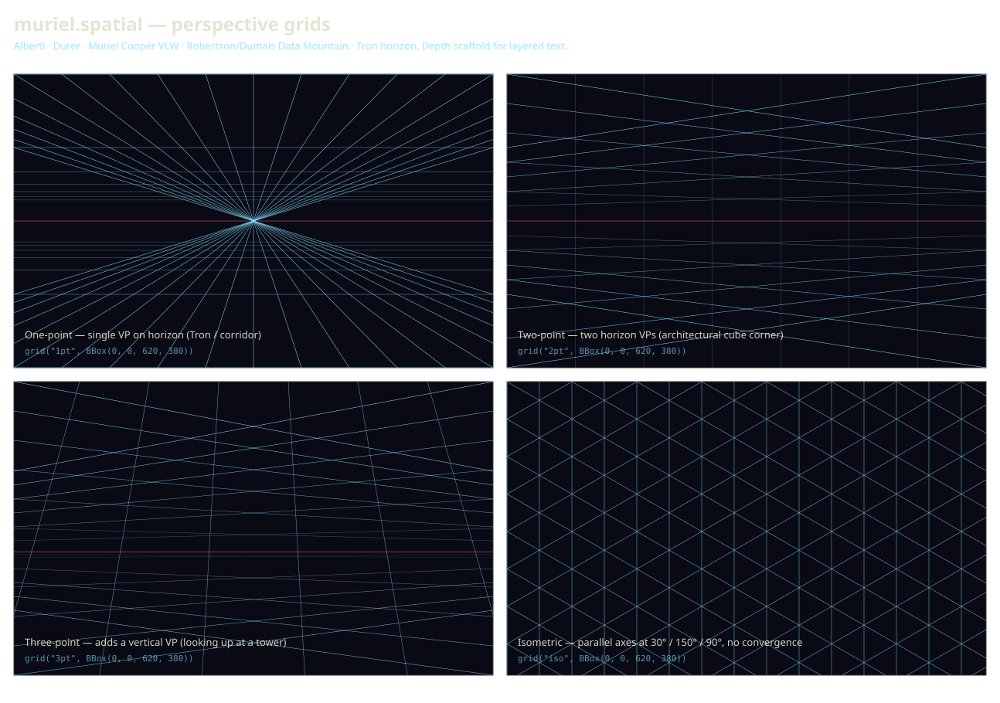
Spatial channel — depth scaffolding
Perspective grids — 1pt / 2pt / 3pt / iso.
Tools: muriel.spatial.grid() emitting deterministic SVG · pure Python, zero deps · Liang-Barsky line clipping · fade-to-horizon depth weighting on transversals · OLED palette throughout. The static side of the spatial channel — pairs with interactive spatial exemplars — Cooper VLW · Data Mountain · Perspective Wall — now live and interactive in the demo gallery, sharing the same coordinate space by design. Channel doc names the full lineage: Alberti 1435 → Dürer 1525 → Cooper VLW 1980s → Mackinlay-Robertson-Card 1991 → Robertson et al. Data Mountain 1998 → Tron.
▸ Live demo gallery → Channel doc →
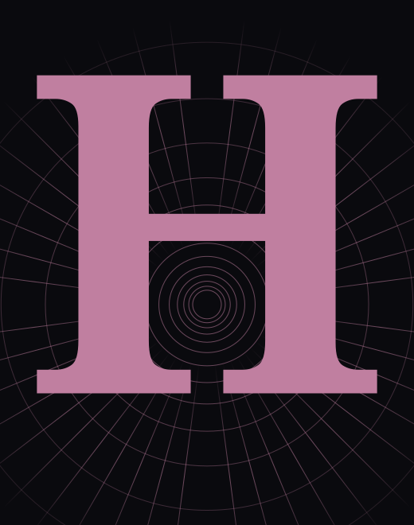
Typography — type as structure
Drop cap H × log-polar cortical grid.
Tools: muriel.typeset drop-cap generator emitting deterministic SVG · log-polar grid backdrop (Schwartz 1977 cortical-magnification mapping — concentric rings + radial spokes traced outward from a foveal singularity) · serif glyph rendered as a filled vector path so it scales to any column width · OLED palette with the anatomical-pink (#c07fa0) accent muriel uses for cortical / retinal annotations. Pairs with the spatial channel — type rendered on the substrate it'll be read with, not floating in an abstract layout box.
Drop-caps gallery →
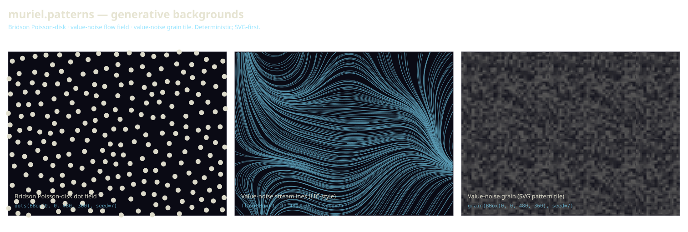
Raster / SVG channels — generative backgrounds
Patterns — dots, flow, grain.
Tools: muriel.patterns · pure Python, zero deps · Bridson (2007) fast Poisson-disk sampling for dots · value-noise vector field traced as polyline streamlines (LIC-style after Cabral & Leedom 1993) for flow · value-noise raster sampled into a small SVG <pattern> tile for grain (file size stays O(tile_cells²) regardless of canvas). All randomness routes through hashlib.blake2b — same seed produces byte-identical SVG across platforms. The workhorse-background layer the screenshot-designer P0 plugs into.
Source →
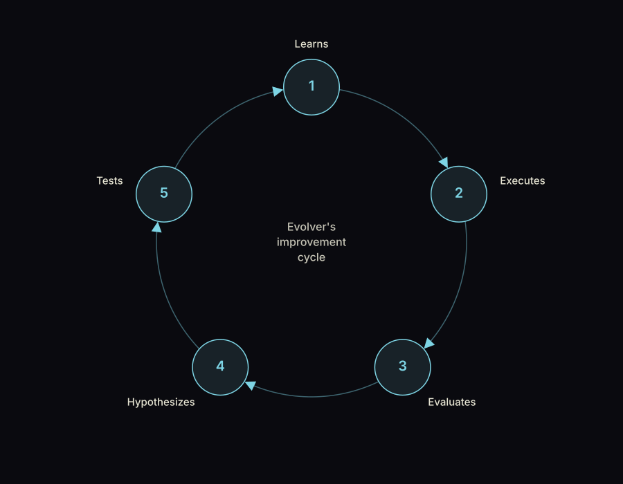
Diagrams channel — rhetorical primitives
N-step cycle — Evolver's improvement loop.
Tools: muriel.tools.diagrams.cycle() emitting deterministic SVG · five nodes evenly spaced on a circle, curved cyan arrows with auto-derived endpoint tangents · auto-placed labels (margin-aware, never overlapping the nodes — uses the same bbox-aware placement as muriel.layout.place_label) · OLED palette · 8:1 on every text node. One of the shipped rhetorical primitives (alongside 2×2 matrix and Venn). Each preset carries an epistemic precondition + anti-prescription — don't use a cycle when your process has an exit.
Channel doc →
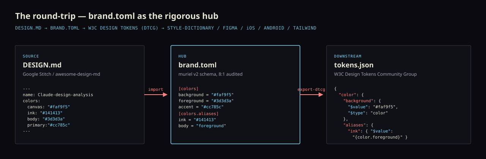
Brand tokens — import and export
design.md ↔ brand.toml ↔ W3C DTCG.
Tools: muriel import (Google Stitch design.md → brand.toml) · muriel export-dtcg (brand.toml → W3C Design Tokens Community Group JSON) · pure Python, no DTCG-validator dependency. All 61 import-parseable brands in VoltAgent/awesome-design-md round-trip cleanly through both halves with zero failures. The exported JSON drops straight into style-dictionary, theo, Figma tokens-studio, or token-css — and from there into iOS / Android / Tailwind / CSS-vars pipelines. This worked example was introduced in v0.8.0.
Read the guide → · Original release notes →
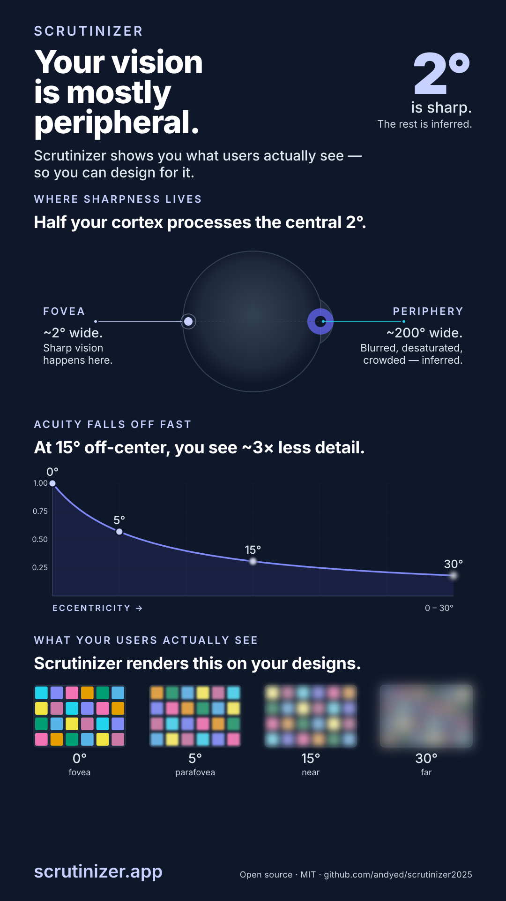
Infographics channel — three-panel single-page
Foveation explainer — Scrutinizer brand asset.
Tools: hand-rolled build_foveation.py emitting deterministic SVG (no D3, no template engine) · OLED palette (cream-on-near-black) for portfolio coherence · 8:1 contrast on every text node verified at build time · rsvg-convert for PNG raster. Single-page LinkedIn-shareable infographic stacking anatomical / statistical / "what users see" panels — the channel that turns a research thesis into one shareable artifact. Lives on the Scrutinizer brand page.
Live page →
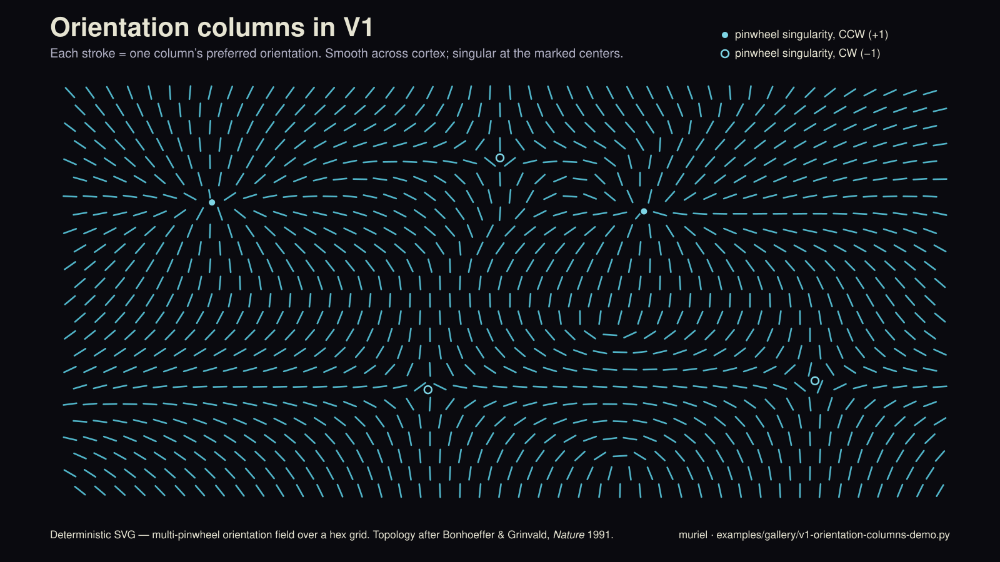
SVG / Science channels — deterministic illustration
V1 orientation columns — pinwheel topology.
Tools: hand-rolled v1-orientation-columns-demo.py emitting deterministic SVG (no D3, no template engine) · multi-pinwheel orientation field (vector averaging on doubled angles to preserve V1's 180° periodicity) over a hex grid · muriel OLED palette · 8:1 contrast on every text node. Replaces an AI-generated illustration of the same concept — muriel's whole point: generated, not guessed. Topology after Bonhoeffer & Grinvald, Nature 1991.
Source →
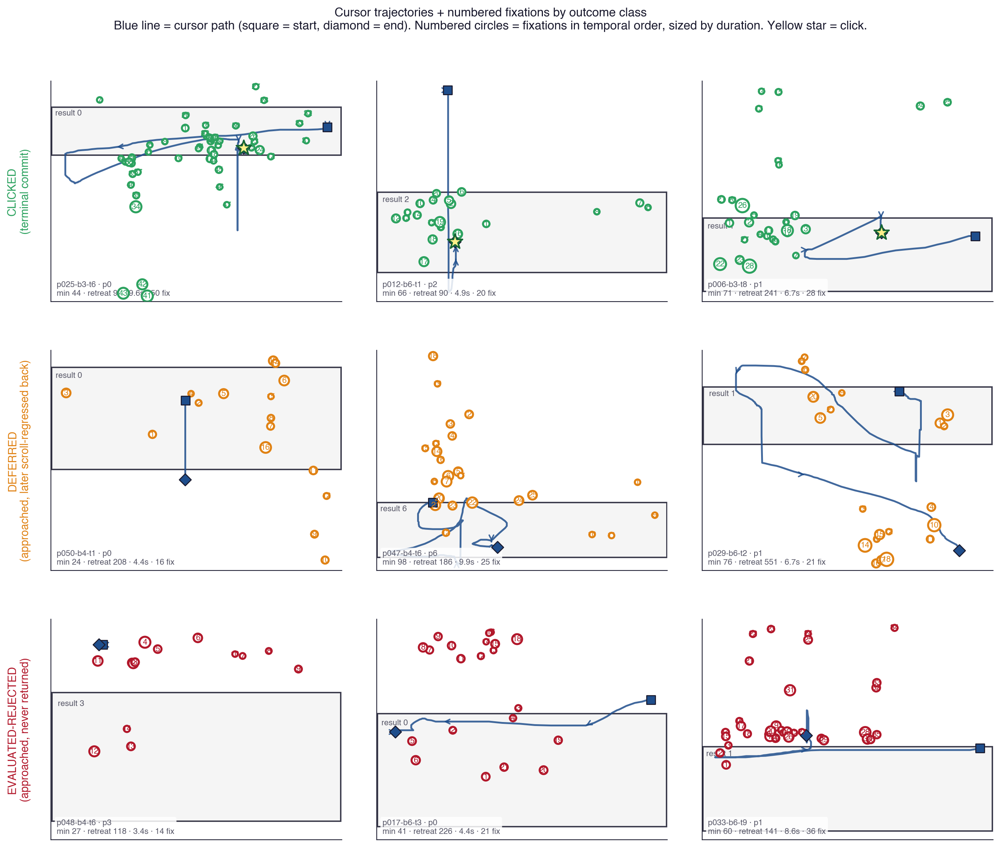
Gaze channel — small multiples
Cursor + gaze trajectories by outcome class.
Tools: matplotlib subplot grid (3×3) · muriel.gaze primitives (numbered fixations sized by duration, start-square / end-diamond cursor markers, AOI rectangles) · muriel.matplotlibrc_light palette · class-coded color (green clicked / orange deferred / red eval-rejected). The small-multiples principle made literal: identical axes and encoding, only the outcome class varies row-by-row. Reading the rows reveals the behavioral signature (tight tracking → late return → never return).
Project source →
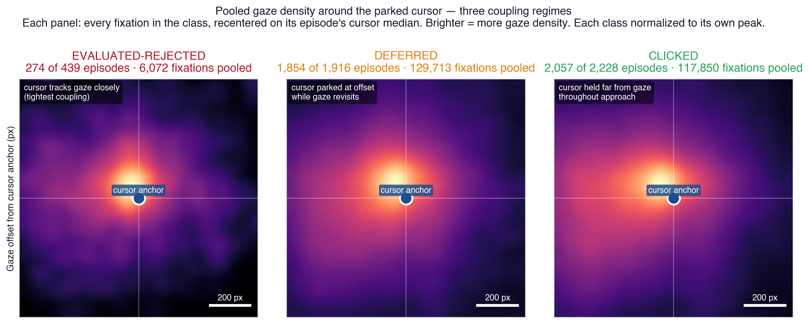
Density viz channel
Pooled gaze density around the parked cursor — three coupling regimes.
Tools: numpy 2D histogram for the density estimation · matplotlib imshow with the inferno-family fire colormap · per-panel peak normalization · muriel.heatmaps conventions (Tobii-style Gaussian-pooled overlay, scale-bar annotation, normalized luminance against ground-truth landmarks). Pools every fixation in each outcome class, recentered on its episode's cursor median: tight coupling (eval-rejected, ~220 px) → cursor parked at offset while gaze revisits (deferred, ~300 px) → cursor held far from gaze throughout approach (clicked, ~390 px). The figure that makes a population statistic visible as a shape.
Project source →
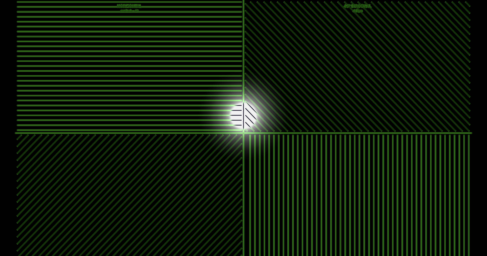
Interactive channel — interactive → captured
Cortical grid comparison — orientation energy revealed by foveation.
Tools: a WebGL grid-comparison demo (external — Scrutinizer's reference-pages/grid-comparison.html, four orientation tiles + foveated spotlight, isotropic-cortical sampling) for the rendering · muriel.capture.capture_responsive() for the retina screenshot · the OLED palette (cream-on-near-black) preserved through capture. Pairs the live interactive substrate with muriel's static-capture pipeline — a demonstration that "the figure" and "the demo" can share a source.
Live post →
Motion tuner
Read the brand and motion guide · View tuner source ↗
muriel's brand.toml ships a [motion] block with duration tokens (instant / fast / normal / slow / reveal, in ms) and easing tokens (default / emphasis / snappy / linear). Move the sliders; the animated bars below re-play at every change. Copy the resulting TOML snippet back into any project's brand.toml to apply.
Use Muriel in your project
Install the Claude Code plugin:
/plugin marketplace add andyed/muriel
/plugin install muriel@andyed-murielInvoke /muriel:compose. For other agent harnesses, Python, and development installs, use the installation instructions. The skill guide explains how Muriel joins the project’s design and implementation work.
Critique and the jury
The critique agent reviews a rendered artifact and records issues with evidence. When a consequential visual decision remains contested after deterministic checks, Muriel can convene an experimental jury with distinct review lenses.
The roster includes the Squinter, Thumbnail, Loupe, Stranger, Forger, and Pedant. Loupe inspects magnified detail. The panel preserves disagreement and records its reasoning; its findings do not substitute for human validation.